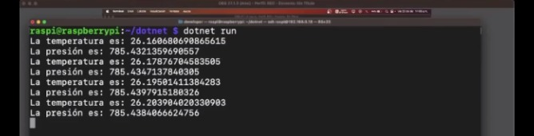
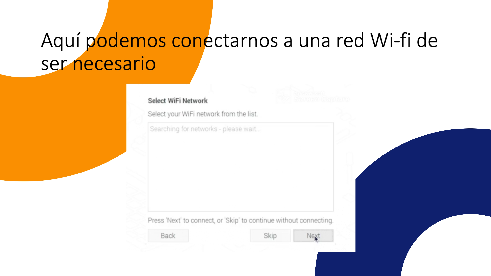
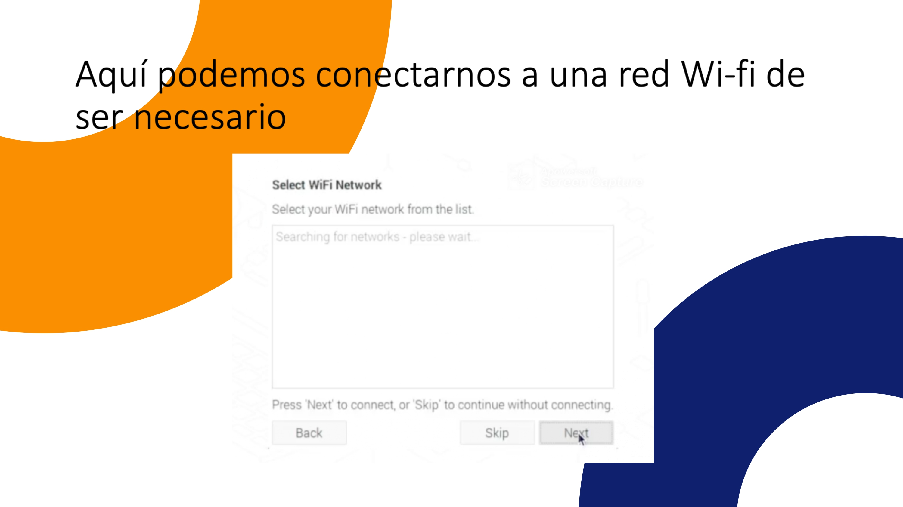
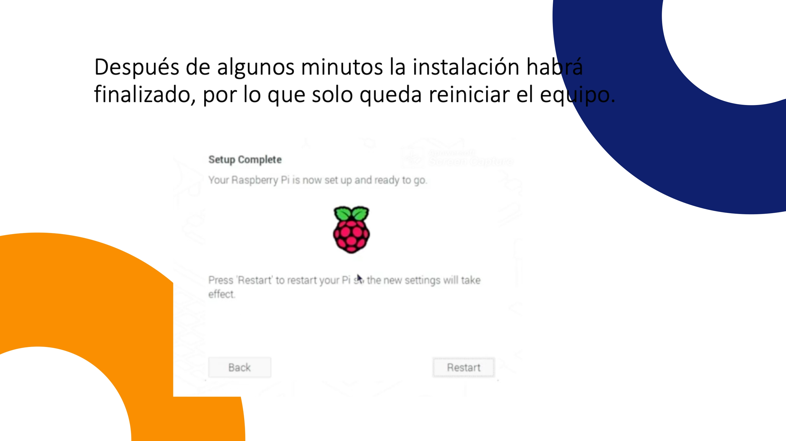
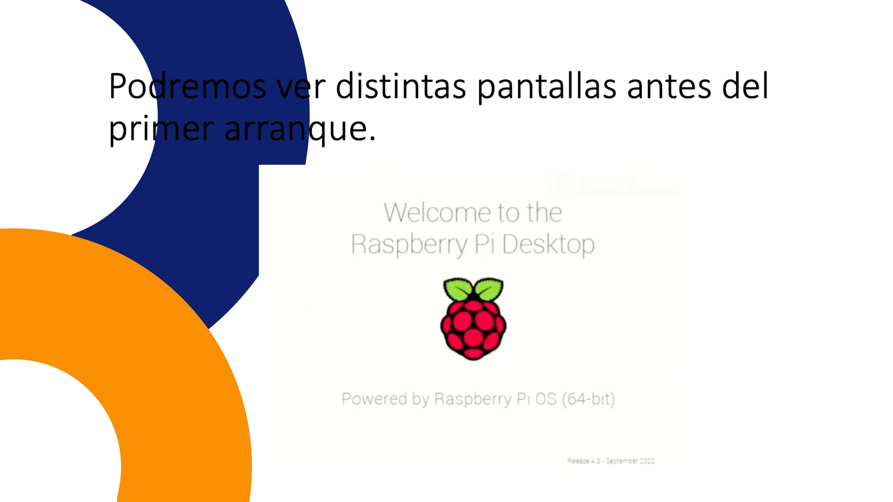
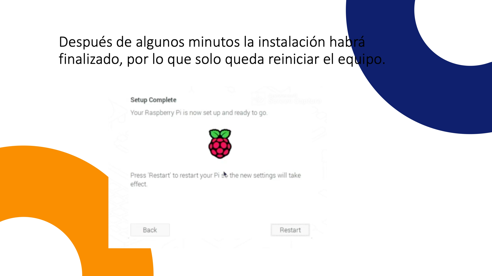
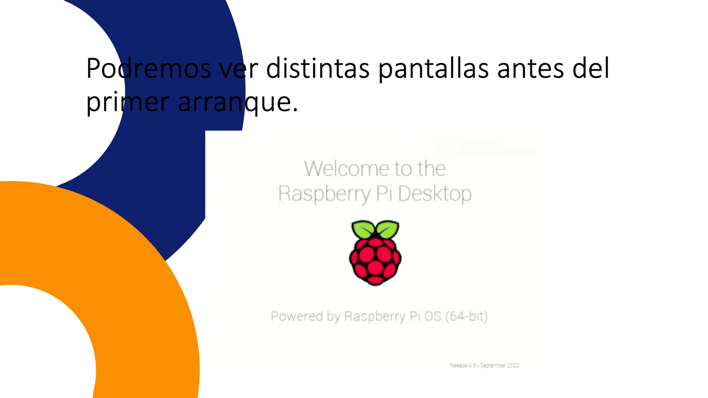

Una vez instalados los SDKs en nuestra Raspberry, podemos comenzar con el desarrollo de las aplicaciones que nos permitan capturar los datos del sensor hacia la consola.
El primer paso es crear un directorio en la carpeta home (~) de nuestra Raspberry con el nombre "dotnet", utilizaremos el siguiente comando:
mkdir dotnet
Una vez hemos creado el directorio, vamos a crear una nueva aplicación de tipo: consola. Utilizaremos el siguiente comando, es imporante notar que éste tiene como parámetro adicional -o que nos permite definir una ruta para la creación del proyecto, en este caso, elegiremos el directorio creado anteriormente.
mkdir dotnet
Posteriormente, nos dirigimos al directorio e instalamos las dependencias necesarias para su ejecución. La plataforma .NET utiliza el gestor de paquetes NuGet.
Para instalar las dependencias, utilizaremos los siguientes comandos:
dotnet add package Iot.Device.Bindings --version 2.1.0
dotnet add package UnitsNet --version 4.149.0
El primer paquete nos permite trabajar con las conexiones físicas y los pines GPIO de nuestra Raspberry, el segundo paquete nos permite trabajar con un sistema de unidades más poreciso para la captura de los datos del sensor.
Dentro del directorio, modificaremos el archivo "Program.cs" copiando el siguiente código y sustituyéndolo dentro del fichero.
using System;
using System.Device.I2c;
using System.Threading;
using Iot.Device.Bmxx80;
using Iot.Device.Bmxx80.FilteringMode;
using Iot.Device.Common;
using UnitsNet;
using System.Text;
double temperatureDouble;
double pressureDouble;
const int busId = 1;
Pressure defaultSeaLevelPressure = WeatherHelper.MeanSeaLevel;
I2cConnectionSettings i2cSettings = new(busId, 118);
I2cDevice i2cDevice = I2cDevice.Create(i2cSettings);
var i2CBmp280 = new Bmp280(i2cDevice);
while (true) {
i2CBmp280.TemperatureSampling = Sampling.UltraHighResolution;
i2CBmp280.PressureSampling = Sampling.UltraHighResolution;
i2CBmp280.FilterMode = Bmx280FilteringMode.X4;
var readResult = i2CBmp280.Read();
readResult = await i2CBmp280.ReadAsync();
temperatureDouble = (double)readResult.Temperature?.DegreesCelsius;
pressureDouble = (double)readResult.Pressure?.Hectopascals;
Console.WriteLine("La temperatura es: " + temperatureDouble);
Console.WriteLine("La presión es: " + pressureDouble);
Thread.Sleep(2000);
}
Una vez copiado el código dentro del fichero, podemos ejecutar el programa utilizando el siguiente comando:
dotnet run

Como podemos apreciar, los datos son enviados correctamente.

 

 


